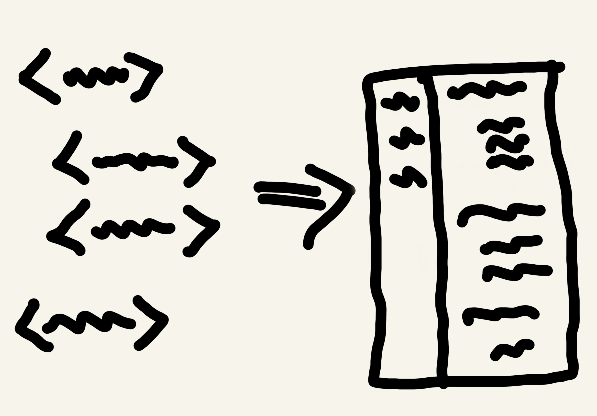

Technical Documentation
Project: Making sure the code is future-proof
Note: due to a non-disclosure agreement (NDA), I cannot share many details about this project. If you would like to learn more, please get in touch directly with me.
There are few things as tedious as trying to understand someone else's code. Probably the only thing more frustrating than that is trying to understand your own code if you haven't seen it for a while. Developers know this very well. They are often faced with the challenge of deciphering why the code is the way it is, and this takes a lot of time. This is one of the reasons why technical documentation exists.
Although understanding code sounds like just another task, it is one of the main difficulties that developers experience on their day to day. It is time consuming, exhausting, and derails them from other important tasks. The good thing is that it can be addressed. By documenting the code properly, developers can avoid falling into the never ending process of trying to make sense of it. My client learned this the hard way.
Context
Technical documentation of a software project can be very useful, but it isn't the most interesting thing to work on. That and a lack of time are probably the main reasons why many companies ignore it until the issue becomes the big elephant in the room.
That was the case of my client. They were trying to cut off corners for their project in order to save time, but it ended up being counter-productive. They needed someone to help them improve the project's technical documentation without affecting their deadlines.
Problem
For my client, the lack of clear documentation resulted in developers constantly complaining that things were confusing. Ironically, they had been avoiding spending too much time writing the documentation because of a tight schedule, but not having it resulted in even more time being lost. Finally, they got to a point where it just couldn't be ignored any more.
If the company wanted to avoid a bigger problem in the future, it needed to address this issue right away. That is when they contacted me. After understanding the problem I agreed to jump in and help, but to do so I would need to set aside some time to work with the development team. This was a major pain point because development teams usually don't have much time.
Solution
Leaving things as they were was not an option. With that in mind, the development team agreed to set aside some hours each week to work on the documentation. Initially, this allowed me to understand what was going on and what needed to be done.
For a start, the process was not structured. To address this, we implemented a technical documentation review process in which there were clear responsibilities assigned to each team member. Additionally, the process required a revision and approval of changes to detect mistakes early and address them in a timely manner. This was implemented in a way that wouldn't affect important deadlines.
Next, I suggested working in close collaboration with a team member. This allowed me to stay in touch with what was going on and remove friction. The person had the responsibility of explaining to me the technical aspects of the project. Thanks to that, I was able to quickly review the information without having to wait for someone to do so, resulting in the documentation being updated almost in real time.
Finally, to make sure that everything in the documentation was clear and nothing was left out, we ended up establishing weekly check-ins. Although it meant another meeting for developers, it became an efficient way for them to not only review the documentation but also discuss technical aspects of the code. Having this space became a way to collaborate and at the same time improve the documentation.
Insights
Trying to save time by doing the wrong things can end up consuming more time. Technical documentation is one aspect that development teams shouldn't neglect if they want to meet deadlines. Having the right process in place is crucial for success. Because each project is unique and so is each team, it was necessary to first understand the situation before implementing a solution.
From this and other similar projects, I've found out that finding the time to review the documentation can add a lot of value. Yes, it is time consuming and can be tedious, but it pays off. It is not a nice-to-have but a must-have.
If you or your team members are struggling with their documentation and would like to know how I can help out, contact me.